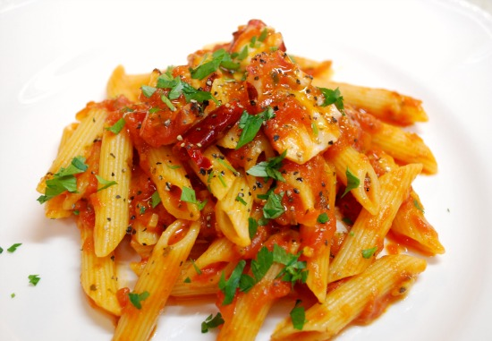

Penne all'arrabbiata
Ingredienti (per 4 persone)
- 380 g di pasta (tipo penne)
- 400 g di polpa di pomodoro
- 1-2 di peperoncino
- q.b. di olio extravergine di oliva
- 1 spicchio di aglio
- q.b. di sale
Preparazione
- Scaldare olio aglio e peperoncino
- Aggiungere il pomodoro e cuocere 10 min
- A parte cuocere le penne al dente
- Unire le penne al pomodoro
- aggiungere prezzemolo tritato